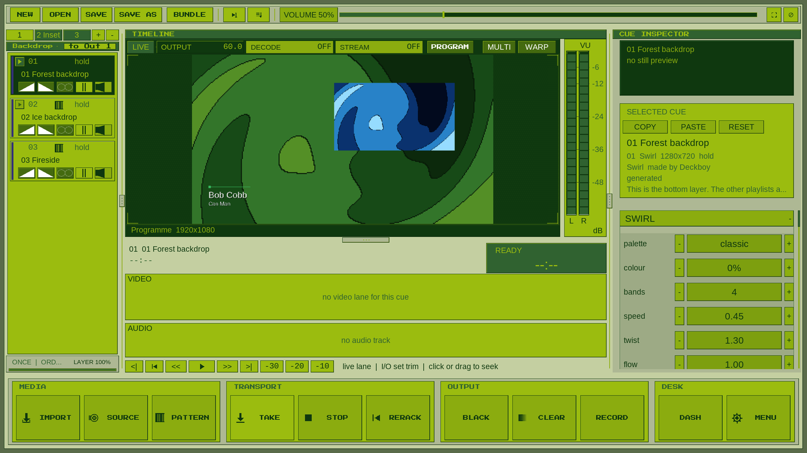
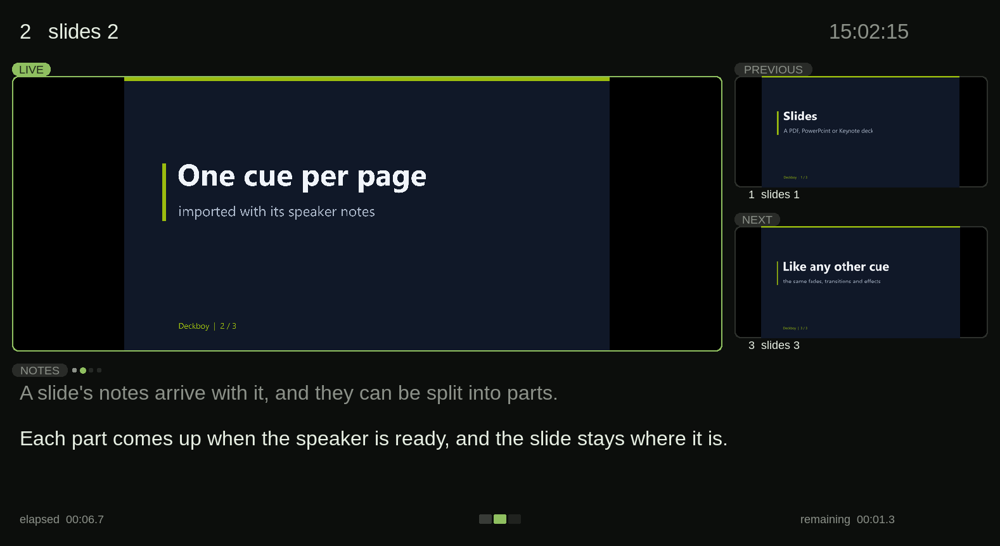

Video, cued
Trim, fade, loop, and hold the last frame rather than reveal a desktop. Seventeen transitions.
More →Seize the means of playback ♡
Run videos, slides and live sources from one cue list. Choose the next cue and take it to the audience. Stream or record the show as it runs.
Free and open source. Windows, macOS, Linux. No account.
Made for
A clip, a slide deck, a camera, a web page, an NDI feed, a test card. Same transport, same transitions, same effects, same button. One operator, one list, no alt-tab.
VIDEO → SLIDE → CAMERA → WEB PAGE → SRT FEED → VIDEO

Three playlists, one layered picture. Captured from the published v0.99.419 build with the bundled layers and titles example. Watch the trailer →
Real captures from Deckboy
Short demos from Deckboy itself. The opening clip has music by YMCK, so it waits for you to press play; the silent demos play as you scroll.
The programme keeps playing while you choose what comes next. View the GIF.
Footage: Tears of Steel, Blender Foundation, CC BY 3.0. Music: YMCK — Family Music (2004), used with permission.
Kaleidoscope, posterise, ripple and crystallise switched on while the clip plays. Footage: Tears of Steel, Blender Foundation, CC BY 3.0.
TAKE the next clip; the one on screen keeps playing until it has faded. Footage: Tears of Steel, Blender Foundation, CC BY 3.0.
The built-in moving test card, measured by the live scopes. Output and analysis counters stay visible.
The warp editor shows the output being adjusted, right in the programme monitor.
Set a fixture’s level and colour in the cue inspector. Send it over Art-Net or sACN.
A Mic cue’s gain and meter, shown with the built-in test signal. Add routing, fades and audio effects.
The current phone interface, connected to the desk. View the complete controller.
Desk, video playback, effects, scopes and warp captured from published v0.99.419 on 23 October 2026. GIFs and desk clips are sampled demonstrations; their playback rate is separate from the live counters. Capture versions and notes.
Trim, fade, loop, and hold the last frame rather than reveal a desktop. Seventeen transitions.
More →Screens, NDI, SRT, RTMP, Blackmagic SDI and SMPTE ST 2110, several at once, each with its own warp.
More →A standby kept apart from what you are looking at. Pre-waits, continues and triggers.
More →A PDF, PowerPoint or Keynote deck imports as one cue per slide, speaker notes and all.
More →Any window on the machine at its full resolution, or a URL rendered into the programme.
More →A per-cue rack on the live picture and sound, every control on an oscillator.
More →VST3 effects and instruments in a cue’s audio chain, beside Deckboy’s own.
More →No account, no dongle, no licence server, no trial. Free under the GPL-3.0.
More →New in 0.99.419
Crossfades that keep moving, scopes that keep up, a monitor that shows the output you warp, and five example shows on the startup screen. What’s new →
Databend reads the frame out as a signal and plays it through an audio chain — a delay with feedback, a filter, a wavefolder — then paints what comes back. The look people chase by opening a picture in an audio editor, on a live cue and on a knob. Its opposite number, audioprint, draws the sound the deck has just played through the picture; put one of each on a cue and they bend each other.
Projection mapping, in perspective. A layer pinned onto a steep board folds along the diagonal when it is drawn linear; switch it to perspective and the board is flat, its far end properly smaller. Drag the four corners on the programme monitor, and the programme, the recording and the stream all carry it.
The arcade lower third, one of 52 looks: the name in Deckboy's pixel face, a hard shadow, and a slow wobble for as long as it is up. Its colours and size can be set from a Companion button.
A web page and a slide deck, on the same list as a clip. The page is rendered into the programme and keeps updating; the deck is a PDF, PowerPoint or Keynote file, imported as one cue per slide with its notes.
Text mode redraws any picture in real characters, darkest to brightest. Turn the columns up and the face resolves out of the letters; every mark is still a character.
Effects on a live cue, switched on the beat without interrupting the picture. Forty-two of them, every parameter on an oscillator, and the recording keeps every frame.

Presenter view is an output type of its own, so it takes its own display. Here it is part-way through a build: the live slide holds still while the notes advance a step at a time, the part already spoken greys out, and the footer counts what is left before the next cue.
Deckboy Mini is the one-deck player that ships beside the desk: point deckboy-mini at clips or a folder and it plays them fullscreen through the same engine, takes the same remote commands on the same port, and the whole show runs from the keyboard in its terminal, over SSH too: find a cue by name, queue the next one, stop after this one, shuffle, crossfade. It comes inside every download, and on its own as a small download for Windows, macOS, Linux and the Raspberry Pi. Read its miniature manual →
# Or install it from a package manager, and a new release is one scoop update or brew upgrade away.
windows> scoop bucket add deckboy https://github.com/Utopian-Academy/scoop-deckboy
windows> scoop install deckboy/deckboy
macos> brew install --cask utopian-academy/deckboy/deckboy
linux> flatpak install --user Deckboy-*-x86_64.flatpak # the .flatpak from the latest release
pi> tar xzf Deckboy-Mini-*-linux-arm64.tar.gz # Deckboy Mini on its own, for a Raspberry Pi
Mentioned in Awesome NDI · Awesome SDL · Awesome Streaming Tools. Built with SDL3.